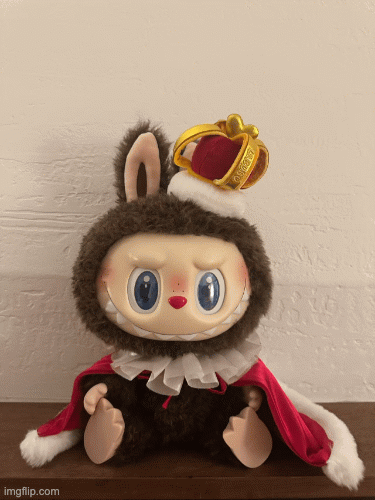

In the close‑up photo on the left, my friend is holding the phone very close to my face.
The wide‑angle lens exaggerates my features. On the right, they stood farther back and zoomed in,
giving a more natural and flattering look.
Part 2
Architectural Perspective Compression
Wide‑angle ViewCompressed Perspective
The wide-angle view makes the lamp appear isolated and tall. With a longer lens,
the space compresses, bringing background elements visually closer to the subject.
Part 3
Dolly Zoom

Dolly Zoom – Wide Start
As the camera moves back while zooming in, the background stretches dramatically.
This dolly zoom keeps the subject the same size but shifts the surrounding space
for a surreal effect.